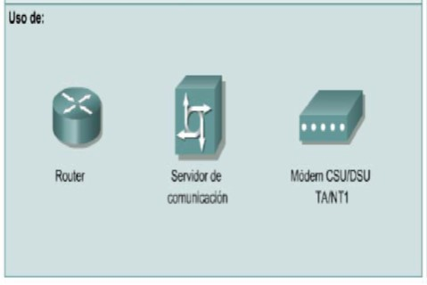

Redes de area amplia (WAN)
Una red de área extensa (Wide Area Network, o WAN) es una red privada de telecomunicaciones geográficamente distribuida que interconecta múltiples redes de área local (LAN). En una empresa, una WAN puede consistir en conexiones al corporativo, sucursales, instalaciones de colocación, servicios en la nube y otras instalaciones. Normalmente, se utiliza un enrutador u otro dispositivo multifunción para conectar una LAN a una WAN.

Las WAN están diseñadas para realizar lo siguiente:
- Operar entre áreas geográficas extensas y distantes
- Conectar dispositivos separados por grandes distancias, e incluso a nivel mundial
- Posibilitar capacidades de comunicación en tiempo real entre usuarios
- Brindar recursos remotos de tiempo completo, conectados a los servicios locales
- Brindar servicios de correo electrónico, World Wide Web, transferencia de archivos y comercio electrónico
>
BÚSQUEDAS RELACIONADAS
Redes de area local (LAN)
Redes de area metropolitana (MAN)
Redes de area de almacenamiento (SAN)